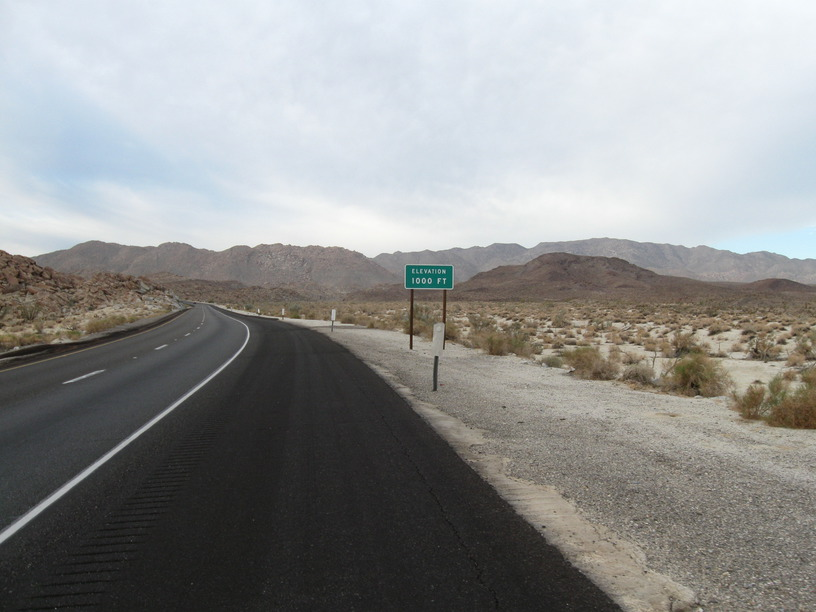
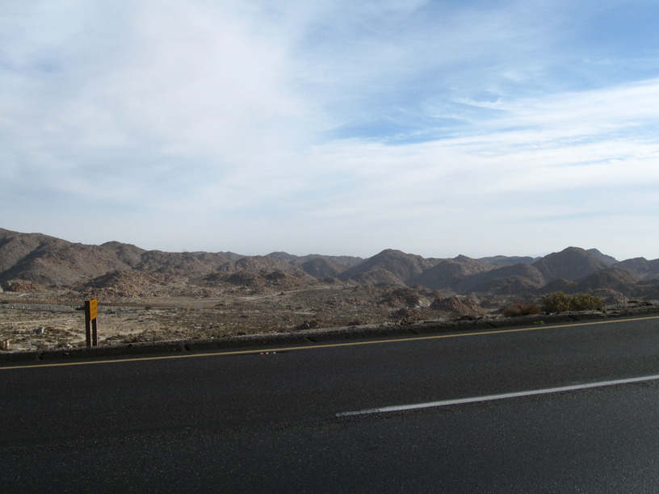
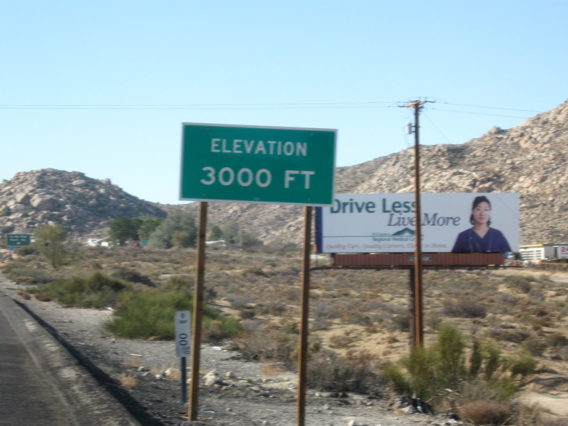
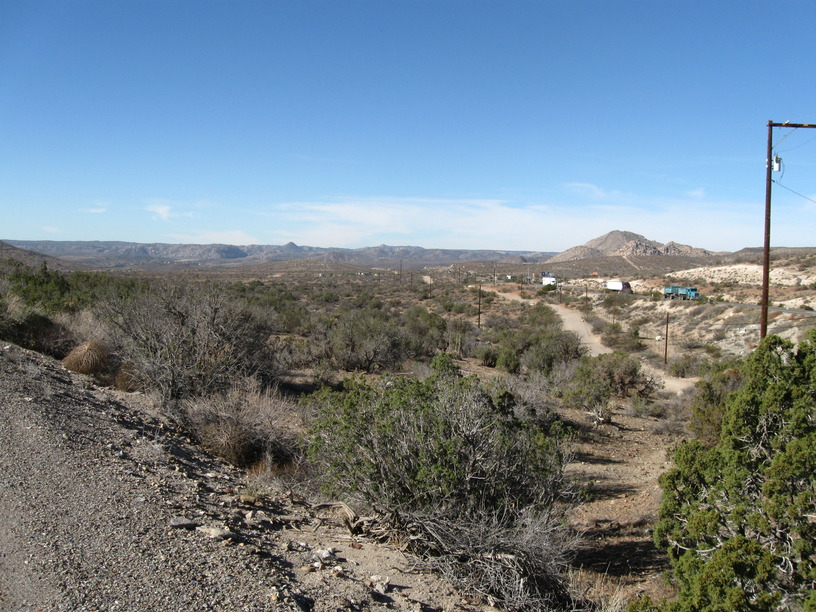
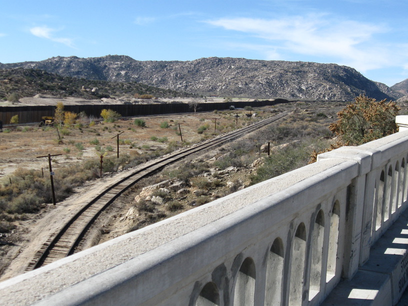
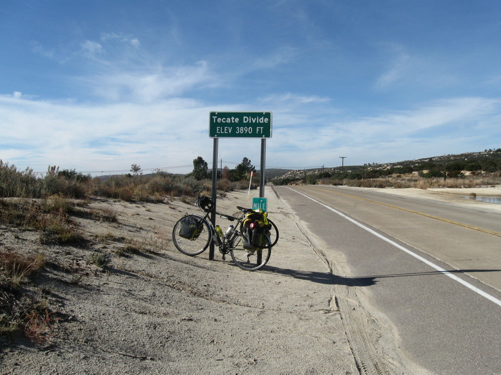
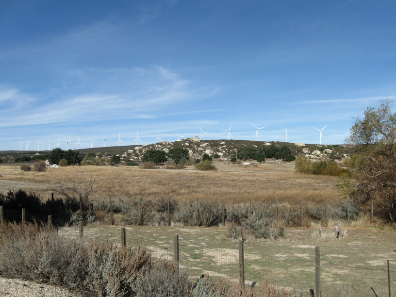
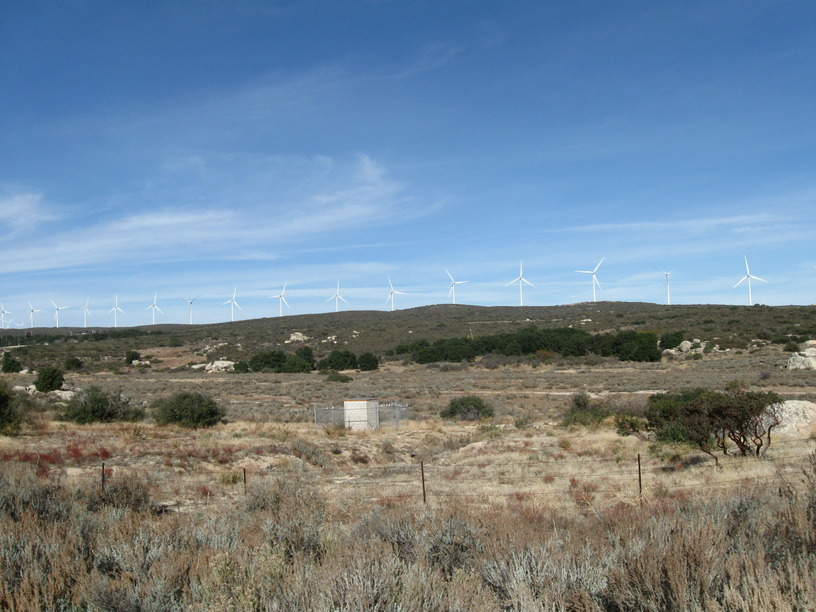
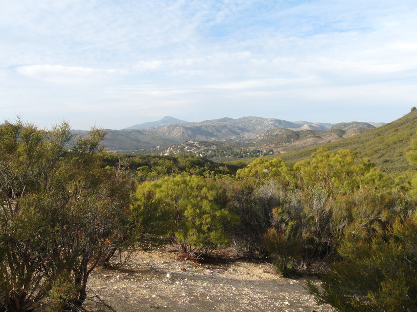

4 Dec 2008, Alpine, CA
Lots of up & down today as I cross the last mountains along the shore. I'm about 40 miles from the water tonight! Of course, my plan isn't to get there tomorrow—I'm going to go to Kim's 2nd cousin's in south east San Diego, Andrea's. Saturday I'll hit the coast.
Met & talked with a lot of cool people today. First was a woman who had pulled over on the long climb that started the day—I think her name is Annie . . . I've got her card somewhere. She's another former engineer—now she makes & sells jewelry. We talked some politics (she's a big Obama fan) & she asked all about my trip before I headed off again.
The next group of people I met because I walked into the Jacumba library to use a computer, and found them installing them. One woman was so excited about my trip she had her picture taken with me. One of the guys had ridden the West Coast previously & walked out to check out my bike.
Then at lunch (Lynda's Salsa in Boulevard—very good Mexican) the folks at the next table asked me about the trip. They had seen my bike out front.
I also got waved through a Border Patrol checkpoint (on an uphill) & had traffic stopped to let me through a short work zone with the road to myself.
So yeah—good day.









